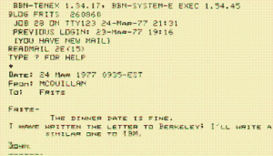
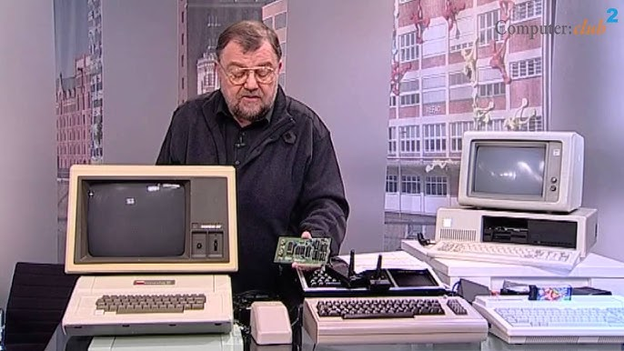

📋 Resumo
Se as décadas anteriores haviam sido marcadas pela experimentação, pela pesquisa militar e por pequenas redes isoladas, os anos de 1980 a 1985 foram o período em que surgiram os primeiros sinais concretos de que a humanidade estava prestes a unificar seus sistemas de comunicação em algo realmente global. Para muitos historiadores da computação, esse período marca a passagem definitiva da internet de um projeto militar-acadêmico para um sistema mundial em expansão — e, como toda mudança histórica profunda, ela não ocorreu por acaso. Foi resultado de pressões militares da Guerra Fria, avanços científicos acumulados desde os anos 1940, novos modelos de redes e computadores e, sobretudo, um esforço político-institucional para padronizar a comunicação digital.
📚 Detalhes
No início dos anos 1980, os Estados Unidos já estavam totalmente imersos na lógica da Guerra Fria. Em 1979, a invasão soviética do Afeganistão reacendeu tensões e levou o governo norte-americano a ampliar novamente investimentos em pesquisa tecnológica e de defesa. Sistemas de comando e controle militares dependiam cada vez mais de computadores e redes confiáveis, capazes de sobreviver a ataques, falhas ou interferências. É nesse contexto que o TCP/IP, criado em 1974 por Vint Cerf e Robert Kahn, passa a ser visto como a solução mais promissora. A grande genialidade do TCP/IP é que ele permitia que diferentes máquinas, redes, protocolos e até satélites conversassem entre si, criando a ideia de uma rede de redes — um conceito revolucionário para a época.
Em 1º de janeiro de 1983 ocorreu um marco que até hoje é considerado o “dia da virada” da internet: a ARPANET desligou oficialmente o antigo protocolo NCP (Network Control Protocol) e adotou o TCP/IP como padrão universal. Essa migração não foi apenas técnica, mas profundamente simbólica. Com ela, estabelecia-se a base que permitiria que universidades, laboratórios, centros militares e, mais tarde, empresas e usuários comuns se conectassem dentro de um mesmo sistema de endereçamento e comunicação.
Esse momento é tão importante que alguns estudiosos chamam 1983 de o “ano zero da internet moderna”. Sem essa padronização, nenhuma rede posterior — a web, o e-mail comercial, os buscadores e muito menos as redes sociais ou os smartphones — poderia existir.
Durante esses anos, a comunidade científica crescia rapidamente. Universidades norte-americanas e europeias se integravam à ARPANET e também às redes paralelas, como BITNET (voltada para o meio acadêmico), CSNET (Computer Science Network) e Usenet (uma plataforma de discussão distribuída, precursora dos fóruns e redes sociais). Esse ambiente colaborativo transformou a pesquisa em algo coletivo e global. Estudantes, professores, programadores e engenheiros trocavam mensagens, artigos, códigos e ideias em tempo real — algo revolucionário para uma época em que a comunicação ainda dependia do correio físico e de telefonemas caros.
Com essa expansão, o e-mail se tornou a ferramenta mais usada dentro da ARPANET. Pesquisadores armazenavam, enviavam e organizavam dados de pesquisa com eficiência nunca vista antes, e a troca de mensagens começou a aproximar laboratórios em continentes diferentes. Surgiram também protocolos auxiliares para facilitar essa vida conectada, como o FTP (para transferência de arquivos) e o DNS, criado em 1984 por Paul Mockapetris. O DNS foi responsável por criar aquilo que usamos até hoje: os nomes de domínio, como .com, .edu, .org e .gov. Antes disso, cada computador tinha que usar endereços numéricos, que eram difíceis de lembrar e causavam problemas de escalabilidade. Com o DNS, a internet ficou mais organizada, intuitiva e pronta para crescer.

Politicamente, os anos 1980 também marcaram outra mudança crucial: foi quando a ARPANET começou a se separar de sua origem militar. Em 1983, o setor militar foi isolado na MILNET, enquanto o restante da rede ficou dedicado ao ambiente acadêmico. Essa separação permitiu que o uso civil crescesse sem carregar o peso das restrições militares, ao mesmo tempo em que os militares mantinham uma rede mais segura e controlada.
Curiosamente, essa divisão ajudou a fortalecer a ideia de que a internet deveria ser um espaço aberto e colaborativo, incentivando universidades, institutos de pesquisa e novos projetos de comunicação digital. No plano tecnológico, a década de 1980 também viu o avanço dos computadores pessoais, como o Apple II, o IBM PC e máquinas domésticas acessíveis. Embora ainda estivessem longe de se conectar à internet como faríamos décadas depois, esses computadores ampliaram o interesse público pela tecnologia digital e criaram toda uma geração de jovens programadores. Revistas de informática, como Byte Magazine e Computerworld, começaram a circular amplamente, alimentando o imaginário tecnológico da época. A computação deixava de ser um assunto exclusivamente militar ou universitário e se tornava parte da cultura popular.

Culturalmente, o início dos anos 1980 se tornou associado a uma estética futurista e digital. Filmes como “Tron” (1982) e “WarGames” (1983) exploravam a ideia de redes, inteligência artificial e sistemas globais de computadores — muitas vezes exagerando, mas ajudando a formar a visão pública do que o futuro tecnológico poderia ser. “WarGames”, em especial, teve impacto direto no governo dos EUA, que após o lançamento do filme passou a discutir seriamente políticas de segurança cibernética, temendo que computadores militares fossem invadidos por civis, exatamente como o protagonista do filme fazia. Ao final de 1985, a internet ainda era pequena, restrita e majoritariamente acadêmica, mas já tinha sido estabelecida a fundação essencial para tudo que viria. O TCP/IP havia se tornado o idioma universal das redes; o DNS havia organizado o sistema de nomes; universidades do mundo inteiro estavam conectadas; listas de discussão e fóruns cresciam diariamente; e os primeiros indícios da internet comercial começavam a surgir discretamente.
Sem esse período, não teria existido a explosão da web nos anos 1990. É por isso que historiadores da tecnologia chamam 1980–1985 de “a década da consolidação invisível”: o momento em que a estrutura digital que sustenta o mundo moderno foi silenciosamente construída.
Como mandar um e-mail em 1980.
Video: https://www.youtube.com/watch?v=szdbKz5CyhA
.
The Machine That Changed the World (PBS) – episódios sobre ARPANET e TCP/IP
Documentário ep.1: https://www.google.com/search?sa=X&sca
.
The KGB, the Computer and Me (documentário sobre segurança digital nos anos 80)
Documentário:
.
Triumph of the Nerds (1996) – sobre o nascimento da computação moderna
Documentário: https://www.youtube.com/watch?v=XlCaiD5VQRU
.
WarGames (1983) – cultura hacker e redes militares
Trailer: https://www.youtube.com/watch?v=TQUsLAAZuhU
.
Tron (1982) – visualização da computação como universo digital
Trailer: https://www.youtube.com/watch?v=BxG69DWd9KM
.
Sneakers (1992) – embora posterior, dialoga com os escândalos dos anos 80 sobre segurança de dados
Trailer: https://www.youtube.com/watch?v=G_XRqJV2zdk
.🔗 Fontes de Pesquisa